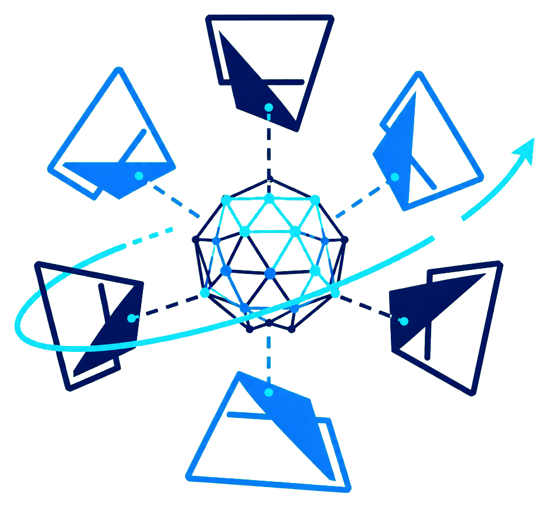
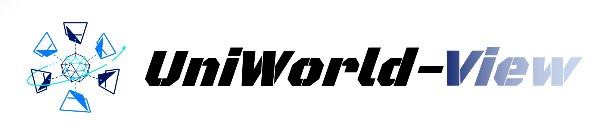
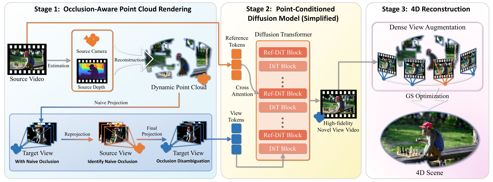
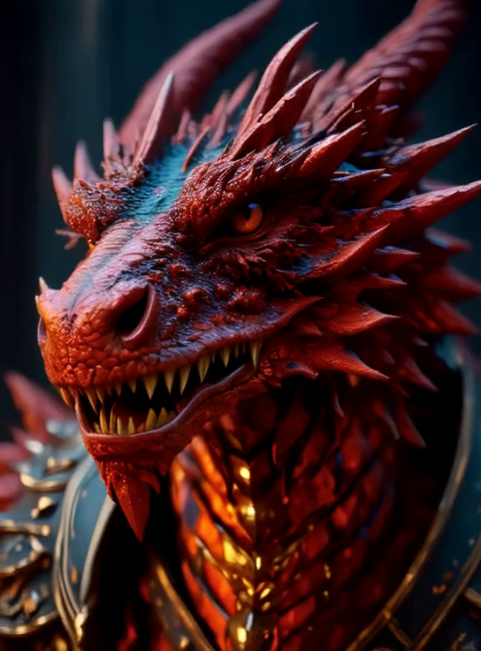
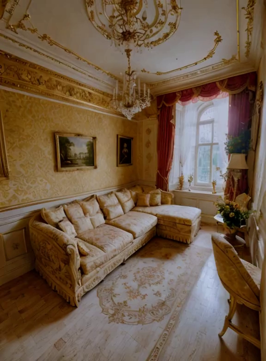
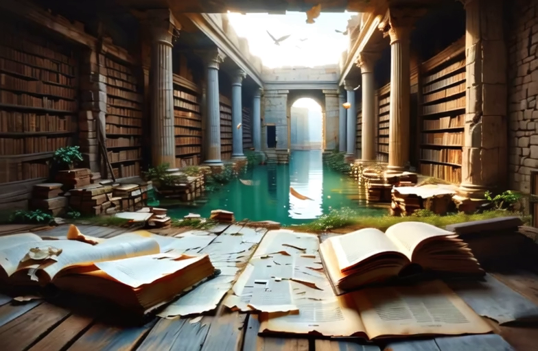
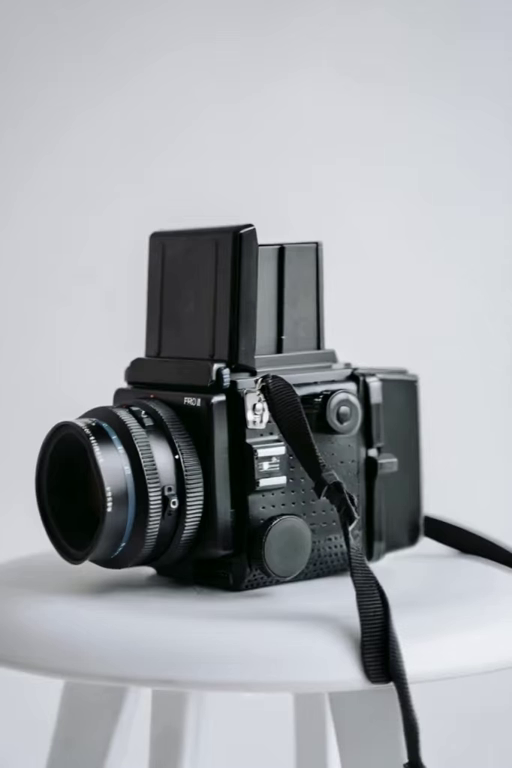
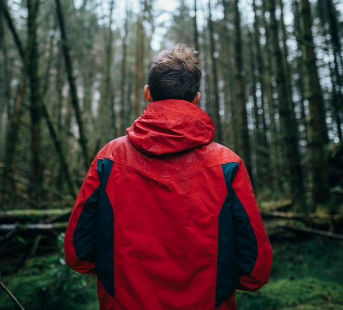

Occlusion-aware rendering
Resolve occlusion ambiguity and visibility before view synthesis.

UNIWORLD-VIEW
Peking University · Rabbitpre AI
Benchmark achievement#1A unified visual world model
UniWorld-View generates photorealistic novel views from a single image or video, even when the target camera moves far beyond the original observation.
It couples occlusion-aware 3D point-cloud guidance with video diffusion to preserve scene appearance, geometry, and temporal consistency across wide-baseline camera trajectories.
UniWorld-View first estimates a dynamic point cloud from the source video, then renders it from the target camera trajectory. A triple-reprojection process disambiguates occlusions, and normal-based filtering removes invalid back-facing points. The resulting geometry-aware conditions guide video diffusion for consistent novel-view synthesis.

Resolve occlusion ambiguity and visibility before view synthesis.
Use source appearance and rendered geometry as dual conditions.
Generate consistent multi-view video for immersive scenes.
UniWorld-View produces high-fidelity novel views across three settings: 3D NVS from a single image, 4D NVS from a source video, and 4D scene generation from a source video.
Input: a single image → Output: a generated video of novel views





Input: a source video → Output: a generated video from a new camera trajectory
Input: a source video → Output: a reconstructed 4D scene
@misc{zhou2026uniworldviewlargebaselineviewsynthesis,
title={UniWorld-View: Large-Baseline View Synthesis via Video Diffusion Models},
author={Haiyang Zhou and Wangbo Yu and Chaoran Feng and Xunyu Zhou and Yonghong Tian and Li Yuan},
year={2026},
eprint={2608.04701},
archivePrefix={arXiv},
primaryClass={cs.CV},
url={https://arxiv.org/abs/2608.04701},
}